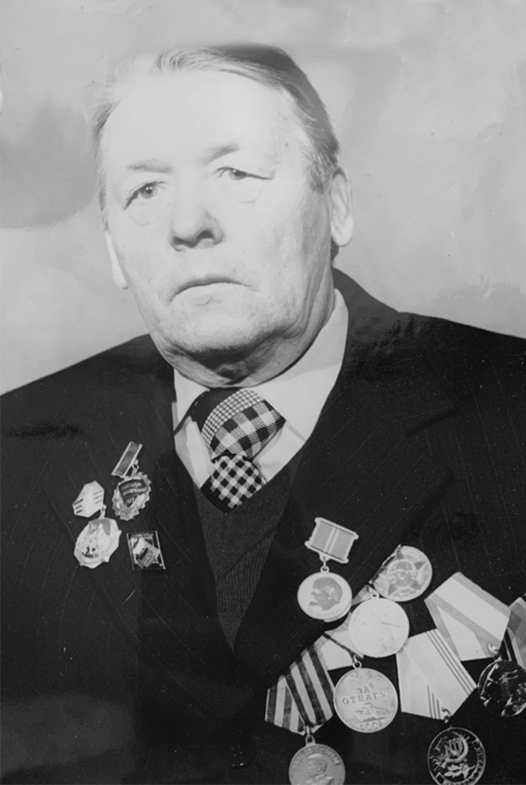

Августинович Виктор Иосифович
Боевой путь
Августинович Виктор Иосифович, родился 29.05.1923 года в деревне Милты Мядельского района. На начало войны ему было 18 лет. Мядельский район был оккупирован немецко-фашистскими захватчиками 28 июня 1941 года. В скором времени он был включён в состав Вилейского гебитскомиссариата. В декабре 1942 года западная часть Мядельщины (довоенный Свирский район) присоединён к генеральному округу «Литва». Партизанское движение на Мядельщине начало зарождаться в 1941 году. Центром сопротивления стали немногочисленные подпольные антифашистские группы. Одна из них в конце 1941 года была создана в д.Мисуны, которой руководил Мисуно Никита Герасимович. Активно действовала весной 1942 года в окрестностях Мяделя партизанская группа П.Чехутина-Н.Гаврилова. С весны 1942г. активные диверсионные действия на Мядельщине начала организованная в Куренецком районе группа Александра Семеновича Азончика. 1941-1942 гг. были периодом накопления партизанских
Партизанская борьба
Для организации и более эффективной партизанской борьбы в августе 1941г. Вилейский обком КП(б)Б сформировал в прифронтовой полосе 15 партийно-комсомольских групп и направил их в тыл противника. В Мядельский район была направлена группа в составе 3 человек, возглавляемая Ф.Г.Марковым. Группа Маркова объединила вокруг себя ряд местных групп, к весне 1942г. переросла в отряд Суворова. Осенью 1942 года в Нарочанские леса из Молодечненского района перебазировался партизанский отряд «Истребитель». В ноябре 1942г. разрозненные группы и отряды объединились в партизанскую бригаду им. Ворошилова, командиром которой стал Ф. Г.Марков. Дислоцировалась в лесу вблизи д.Черемшицы. Мой прадед прошел всю войну пулемётчиком первого взвода в составе партизанского отряда им. Калинина бригады им. Ворошилова. На счету партизанской бригады большое количество успешных операций, которые проводились не только на территории Мядельского района, но и за его пределами. Партизаны проникали во вражеские гарнизоны, вывешивали красные флаги, разбрасывали листовки, закладывали мины.
Подвиг
Во время празднования годовщины Октябрьской революции Августинович В.И. пробрался тайно ночью и вывесил красный флаг на высоком дереве в Мяделе,а к дереву прикрепил табличку «Заминировано»,фашисты боялись подойти к дереву и флаг провисел весь день.
Партизанские бригады Мядельского района
Всего на территории Мядельского района действовало 5 партизанских бригад – им. Ворошилова, 16 Смоленская, им. Будённого, им. Рокоссовского, им.Доватора и 2 отряда спецназначения – им.Дзержинского и «Боевой».Общее количество партизан, постоянно действовавших на Мядельщине, во 2-ой половине 1943 года превышало 5 тысяч человек. К концу 1943 г. бригада им. Ворошилова переросла в крупное соединение. Бригада объединила в своих рядах 12 партизанских отрядов численностью 1865 человек, из них 105 женщин. Здесь воевали не только белорусы, но и русские, литовцы, украинцы, евреи. На счету партизанской бригады большое количество успешных операций, которые проводились не только на территории Мядельского района, но и за его пределами. Партизанами бригады с 1942 г. до сентября 1943 г. разгромлено 19 вражеских гарнизонов, 24 волостные управы, 151 мост, 3 железнодорожные разъезда, 18 складов, уничтожено 177 км телефонно-телеграфной связи. Активными действиями партизаны Мядельщины в 1943 г. отвоевали у врага основную часть района, создали партизанскую зону – только самые крайние точки района Свирь и Кривичи не входили в неё. Несмотря на неоднократные экспедиции карателей, зона удерживала свои границы вплоть до прихода Красной Армии.
Операция «Фриц»
Самой крупной карательной экспедицией была экспедиция «Фриц» в сентябре 1943 года, в которой участвовала 70-тысячная немецкая группировка, окружившая несколько районов Вилейской области. Силы были неравны, партизаны решили не принимать бой и, разделившись на небольшие группы, отошли на север. Каратели обрушили свой гнев на мирное население. Деревни Брусы, Черемшицы, Занарочь и многие другие были буквально стёрты с лица земли. Часть местных жителей была расстреляна или сожжена, остальные вывезены на каторжные работы в Германию.
Оккупация Мядельского района
Мядель оказался внутри партизанской зоны, был блокирован. С декабря 1943 года эта блокада стала полной. Была утеряна связь с другими гарнизонами, почти прекратился подвоз продуктов, боеприпасов. Продовольствие и боеприпасы несколько раз немцы пробовали доставить из Постав, но партизаны пресекали эти попытки. Попытки деблокировать Мядельский гарнизон у немцев не имели успеха. 27 марта 1944 года произошёл бой возле д. Пасынки между партизанами отрядов им. Чапаева, «Грозный», им. Кутузова и фашистами, которые со стороны Постав пробовали прорваться в Мядель. Бой продолжался около 7 часов. В результате было уничтожено 70 врагов, подбиты 2 автомашины, танкетка. Июля 1944 года был освобождён Мядель. В освобождении принимали участие воины 850 стрелкового полка (командир Д.К.Морозов) 277 стрелковой дивизии 5 Армии при содействии партизан бригады им. Ворошилова. За годы оккупации Мядельского района фашисты разрушили 68 населённых пунктов, сожгли 3 деревни вместе с жителями, вывезли на каторжные работы в Германию 3079 человек, уничтожили около 4 000 мирных жителей; на фронтах войны погибло 1185 наших земляков, без вести пропало – 468 человек.
Послевоенная жизнь
После войны, мой прадед, Виктор Иосифович поступил в Педагогический институт имени М. Горького на исторический факультет и стал работать учителем истории в Лукьяновской семилетней школе. В 1954 году назначен директором Лукьяновской школы, а с 1958 года несменный директор Лещинской школы. Вместе с родителями и учащимися мой прадедушка построил новое здание школы.
Награды
В 1985 году был награжден Орденом Отечественной войны II степени. К боевым наградам - медалям «За отвагу» - прибавились и мирные. В.И.Августинович награжден Ленинской юбилейной медалью, две Почетные Грамоты Министерства образования БССР, Почетную грамоту министерства образования СССР. Удостоен звания «Отличник народного образования БССР». Чтобы жить с честью, нужно чтобы память не умерла, знать свою историю, помнить о тех, кто воевал и ещё жив и тех, кто погиб за нас с вами, каждый день. Помните – Любить свою Родину – значит гордиться ею, жить, помнить и конечно верить! Война, война, прошла война, Минуло с той поры уже полвека. Но в памяти людей живёт она...